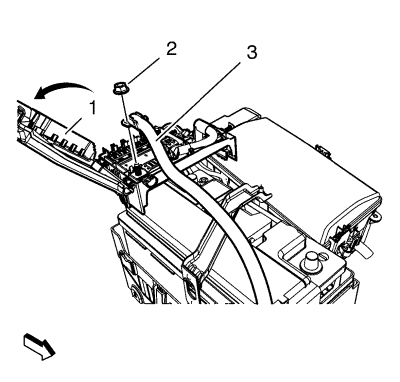
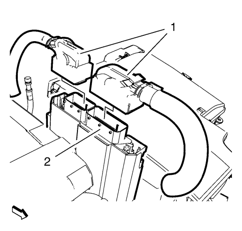
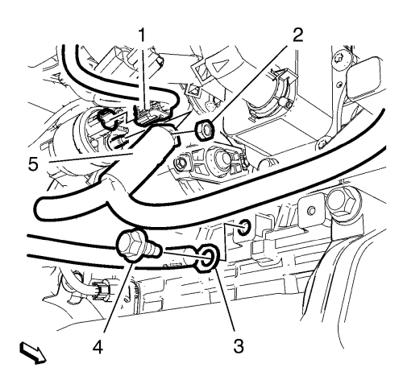

Cruze
Sustitución del cable positivo y negativo de la batería — 2.0L Diésel LNP
Procedimiento de desmontaje
Desconecte el cable negativo de la batería. Consulte
Desconexión y conexión del cable negativo de la batería
→
sin sistema de arranque/parada
.

Afloje las lengüetas de sujeción de la tapa de la caja de fusibles de la batería y abra la tapa (1).
Retire la tuerca que une la batería positiva al cable del motor de arranque (2).
Retire el cable que va de la batería positiva al motor de arranque (3) de la batería.
Desmonte la tuerca del cable negativo (1).
Desmonte el cable negativo (2).

Desemborne los 2 enchufes del mazo de cables del módulo de control del motor (1) del módulo de control del motor (2).
Retire el módulo de control del motor (2) hacia arriba.
Desmonte la bandeja de la batería. Consultar
Sustitución de la bandeja de la batería
.
Retire las 2 tuercas del soporte del cable positivo y negativo (1, 2).
Elevar el vehículo y soportarlo de manera segura. Consultar
Elevación y soporte en alto del vehículo
.
Desmonte el aislante del compartimento del motor. Consultar
Sustitución del aislamiento del compartimento delantero
.

Retire la tuerca del cable positivo y negativo (2).
Retire el cable positivo y negativo (5) del motor de arranque.
Retire el tornillo del cable de masa (4).
Retire el cable de masa (3) del bloque del motor.
Suelte el clip del cable positivo y negativo del soporte.
Doble la caperuza del generador (2) hacia un lado.
Retire la tuerca de retención del cable positivo del generador (3).
Retire el cable positivo del generador (4) del generador.
Cuelgue el cable positivo y negativo a un lado.
Bajar el vehículo.
Retire el cable positivo y negativo del vehículo.
Procedimiento de montaje
Coloque el cable positivo y negativo en el vehículo.
Elevar el vehículo
Coloque el cable positivo y negativo.
Monte el cable positivo y negativo (4) en el generador.
Precaución:
Consulte
Precaución con las fijaciones
en la sección Prólogo.
Monte la tuerca de retención del cable positivo y negativo (3) y apriétela a
17 N·m (13 lib. pie)
.
Pliegue la caperuza del generador (2) hacia el terminal del cable positivo y negativo.
Fije el clip del cable positivo y negativo al soporte.
Monte el cable de masa (3) en el bloque motor.
Monte el tornillo del cable de masa (4) y apriételo a
22 N·m (16 lib. pie)
.
Monte el cable positivo y negativo (5) en el motor de arranque.
Monte la tuerca del cable positivo y negativo (2) y apriétela a
9,5 N·m (84 lib. pulg.)
.
Monte el aislante del compartimento del motor. Consultar
Sustitución del aislamiento del compartimento delantero
.
Bajar el vehículo.
Monte las 2 tuercas del soporte del cable positivo y negativo (1, 2) y apriételas a
17 N·m (13 lib. pie)
.
Emborne los 2 enchufes del mazo de cables del módulo de control del motor (1) al módulo de control del motor (2).
Monte la bandeja de la batería. Consultar
Sustitución de la bandeja de la batería
.
Monte el módulo de control del motor (2).
Emborne los 2 enchufes del mazo de cables del módulo de control del motor (1) al módulo de control del motor (2).
Monte el cable negativo (2).
Monte la tuerca del cable negativo (1) y apriétela a
9 N·m (80 lib. pulg.)
.
Monte el cable que va de la batería positiva al motor de arranque (3) en la batería.
Monte la tuerca que une el cable positivo de la batería al cable del motor de arranque (2) y apriétela.
Cierre la tapa (1) y fije las lengüetas de sujeción en la tapa de la caja de fusibles de la batería.
Conecte el cable negativo de la batería. Consulte
Desconexión y conexión del cable negativo de la batería
→
sin sistema de arranque/parada
.
© Copyright Chevrolet. All rights reserved